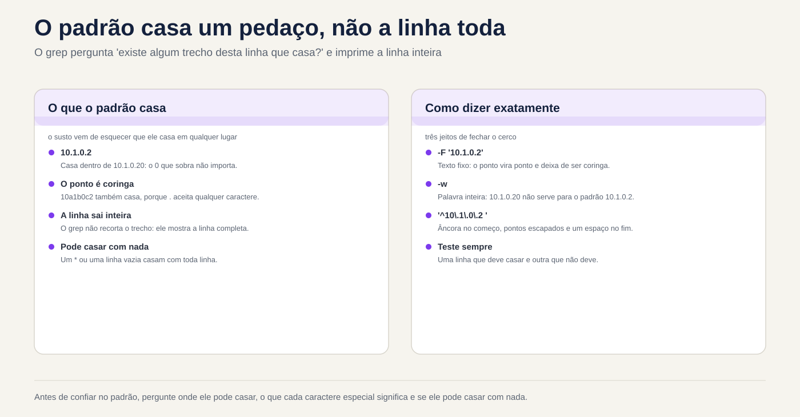
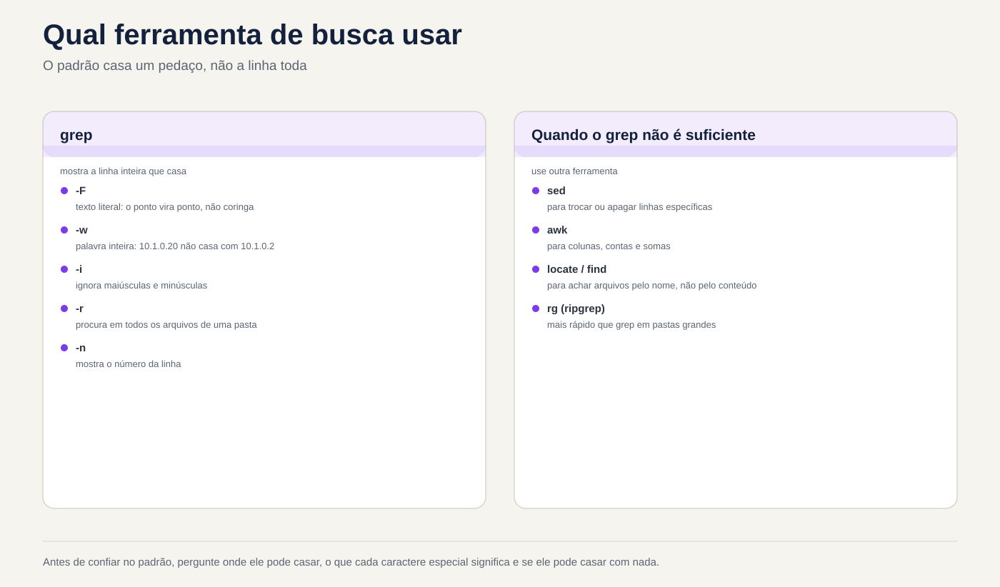

Lezione 3.3 · Regex e grep
Nella lezione 3.2 hai tagliato, ordinato e contato le colonne. Ma quasi ogni vera domanda inizia prima: quali linee contano. "I tentativi di password errati", "le righe che non sono commenti", "gli accessi che provenivano da questo IP e non da uno simile". La persona che sceglie le righe è grep, e il linguaggio che usa per descrivere ciò che sta cercando è l'espressione regolare, regex. Oggi imparerai entrambi in modo approfondito: il punto che corrisponde a qualsiasi cosa, gli ancoraggi, le lezioni, la ripetizione, la differenza tra regex di base ed estesa e le opzioni grep che separano una ricerca da un report affidabile. Alla fine, uno script mostra cosa sshd delle due VM effettivamente utilizza e da quale file proviene ciascun valore.
| File | lezione 3.3 |
|---|---|
| Modulo | M3 · Testo ed editor, lezione 3 di 5 |
| Quando | Settimana 7 |
| Alla fine puoi | Scrivi espressioni regolari con ancore, lezioni, ripetizioni e gruppi, in BRE ed ERE; sapere quando il punto, l'asterisco e la parentesi fanno ciò che non volevi; cercare il testo fisso con grep -F e le parole intere con -w; utilizzare un elenco di modelli con -f senza cadere nella riga vuota; estrarre solo la sezione che corrisponde a -o; rimuovere commenti e righe vuote da un file di configurazione; cercare alberi di directory con -r; leggere l'exit status del grep e distinguere “non l'ho trovato” da “non sono riuscito a leggerlo”; filtrare il log SSH su entrambe le VM, nel file e nel journal |
| Articoli di prova | LE 3.2 (cercare ed estrarre dati da file) · LPIC-1 103.7 (cercare in file di testo utilizzando espressioni regolari: grep, egrep, fgrep, regex di base ed estese) · RHCSA (utilizzare grep ed espressioni regolari per analizzare il testo) |
| Prerequisiti | lezione 1.5 (base grep); lezione 3.1 (pipe, quote, exit status); lezione 3.2 (cut, sort, uniq, ~/lab32/acesso.log) |
| Tempo | Intorno alle 2:30 |
| Istantanee | m3a3-start e m3a3-end su entrambe le VM |
1 · Riscaldamento
Tre domande, fuori dalla mia testa. Scrivi le risposte; la chiave di risposta viene visualizzata alla fine.
- Cercate IP
10.1.0.2in un protocollo congrep 10.1.0.2 acesso.log. Indovina: appaiono solo le righe per questo IP? - Un file di configurazione ha commenti con
#all'inizio della riga. Indovina:grep -v '^#'lascia solo le righe che contano? - Uno script fa
if ps aux | grep -q backup; then echo "já está rodando"; fi. Indovina: cosa dice quando non è in esecuzione alcun backup?
2 · Perché è importante
grep è il comando che tutti pensano di sapere già come usare. Proprio per questo tace:
| Il cosiddetto | La risposta sbagliata | Cosa provoca |
|---|---|---|
"Blocca IP 10.1.0.2, sta attaccando" | grep 10.1.0.2 acesso.log verificare | Compaiono anche le righe 10.1.0.20, 10.1.0.21 e 10.1.0.254. Il rapporto incolpa macchine innocenti e il firewall blocca il file server |
| "Qual è la configurazione SSH effettiva?" | grep -v '^#' /etc/ssh/sshd_config | Rimangono righe vuote e commenti rientrati, i file di /etc/ssh/sshd_config.d/ scompaiono. Giuri che la password è disattivata e è attiva |
| "Fammi sapere se qualcuno sbaglia la password" | grep -q 'Failed' log 2>/dev/null in un if | In Debian il file non esiste nemmeno; senza autorizzazione fallisce anche il grep. Lo script dice "tutto a posto" per sempre |
| "Il backup si avvia solo se non ce n'è nessun altro in esecuzione" | ps aux | grep -q backup | grep si trova nell'elenco dei processi. Il backup non si riavvia mai e nessuno lo vede perché non è presente alcun errore |
| "Cerca chiunque abbia avuto accesso a un IP da questo elenco" | grep -f lista.txt log | L'elenco termina con una riga vuota e la riga vuota corrisponde a tutto. Il rapporto dice che tutti sono sulla lista |
"Trova dove è configurato PermitRootLogin sul server" | Apri file per file nell'editor | Un grep -rn PermitRootLogin /etc/ssh/ risponde in un secondo, con il numero del file e della riga |
Regex è un linguaggio piccolo con poche regole. Chi conosce le regole scrive lo schema che corrisponde a ciò che si deve fare, e solo con quello.
3 · Modello mentale
greplegge una riga alla volta e chiede: c'è qualche parte di questa riga che corrisponde allo schema? Se c'è, la riga esce tutta intera. Non è necessario che il modello corrisponda all'intera linea, ma solo a una parte di essa, ovunque. Quasi ogni spavento congrepderiva dal dimenticare questo: il modello corrisponde dove non stavi guardando.
Padrão: 10.1.0.2 Linha: 10.1.0.20 - - [03/Nov/2026...] "GET / ..." 200 5120
1 0 . 1 . 0 . 2
│ │ │ │ │ │ │ │
1 0 . 1 . 0 . 2 0 - - [03/Nov... O trecho existe: a linha sai.
↑ O "0" que sobra não importa.
O ponto casa com QUALQUER caractere:
1 0 . 1 . 0 . 2
│ │ │ │ │ │ │ │
1 0 a 1 b 0 c 2 0 Também casa.
Como dizer exatamente o que você quer:
-F '10.1.0.2' o ponto vira ponto: texto fixo, sem regex
-w o trecho tem que ser uma palavra inteira: "10.1.0.20" não serve
'^10\.1\.0\.2 ' regex: no começo da linha, pontos de verdade, e um espaço depoisTre domande per ogni modello, prima di eseguire: dove può corrispondere (all'inizio, alla fine, ovunque?), cosa significa ogni carattere speciale qui (il punto è un punto o è "qualsiasi"?), e può non corrispondere a nulla (un * o una riga vuota corrisponde a ogni riga)? E una regola pratica: prima di fidarsi di un modello, testarlo con una riga che dovrebbe corrispondere e un'altra che non dovrebbe.


4 · Concetto a strati
Essenziale
grep sceglie le righe. Le opzioni che utilizzerai ogni giorno:
| Opzione | Cosa fa | Esempio |
|---|---|---|
-i | Ignora maiuscole e minuscole | grep -i 'error' app.log |
-v | Inverte: mostra le righe che non corrispondono | grep -v '^#' arquivo |
-c | Conta le righe che corrispondono, invece di mostrare | grep -c 'Failed' secure |
-n | Mostra il numero di riga | grep -n 'Port' sshd_config |
-w | Basta casa tutta la parola | grep -w 'root' /etc/passwd |
-x | Corrisponde solo all'intera riga | grep -x 'ana' nomes.txt |
-o | Mostra solo la sezione corrispondente, una per riga | grep -o 'from [0-9.]*' secure |
-l | Mostra solo il nome dei file che contengono una riga | grep -l 'PermitRootLogin' /etc/ssh/* |
-r | Cerca tutti i file in una directory | grep -rn 'PermitRootLogin' /etc/ssh/ |
-E | Regex esteso (ERE) | grep -E '401|403' |
-F | Testo corretto, nessuna regex | grep -F '10.1.0.2' |
-q | Non mostra nulla; solo lo stato di uscita | if grep -q ...; then |
Inserire sempre il modello tra virgolette singole. Senza virgolette, la shell della lezione 3.1 lo modifica per primo: un * diventa un nome di file, uno spazio separa il modello in due argomenti.
Caratteri speciali. Nelle espressioni regolari, quasi ogni carattere corrisponde a se stesso. Coloro che non si sposano:
| Carattere | Significa | Esempio | Casa con |
|---|---|---|---|
. | Qualsiasi carattere, esattamente uno | l.g | log, lag, l g, l.g |
^ | Inizio riga | ^Port | Port 22, non #Port 22 |
$ | Fine della riga | bash$ | /bin/bash, non /bin/bash-old |
[abc] | Un personaggio tra quelli elencati | [Pp]ort | Port, port |
[a-z] | Un personaggio della gamma | [0-9] | una cifra |
[^abc] | Un carattere che non è presente nell'elenco | [^#] | tutt'altro che # |
* | Il precedente, zero o più volte | ab*c | ac, abc, abbbc |
\ | Togli il potere speciale degli altri | \. | solo un punto |
La coppia di ancoraggi indica dove il modello può corrispondere: ^root solo all'inizio, nologin$ solo alla fine, ^$ è una riga vuota e ^root$ è una riga che è solo root.
Regex di base ed estesa. grep senza un'opzione utilizza la regex basic (BRE). grep -E utilizza l'esteso (ERE), che aggiunge cinque operatori:
Presso ERE (grep -E) | Significa | Esempio |
|---|---|---|
+ | Il precedente, una o più volte | [0-9]+ |
? | Il precedente, zero o una volta | https? |
{n,m} | Il precedente, da n a m volte | [0-9]{1,3} |
| | Oppure | 401|403 |
( ) | Gruppi | (ab)+, (GET|POST) /login |
In BRE, questi cinque caratteri sono comuni: grep '(401|403)' cerca letteralmente una parentesi, 401, una barra verticale, 403 e un'altra parentesi. È la confusione numero uno nella lezione e il Passo 3 mostra.
Lo stato di uscita. grep termina con 0 se ha trovato almeno una riga, 1 se non ne ha trovata nessuna e 2 se ha dato un errore: file che non esiste, autorizzazione negata, regex non valida. In un if, 1 e 2 rientrano entrambi nel else.
Intermedio
Testo fisso e parola intera. Un IP, un nome file puntato, un percorso: questi sono testo, non regex. -F disattiva tutti i caratteri speciali e di conseguenza è più veloce. -w richiede che il passaggio sia circondato da qualcosa di diverso da una lettera, cifra o _, o dall'inizio e dalla fine della riga:
grep -F '10.1.0.2' acesso.log # il punto è un punto, ma 10.1.0.20 corrisponde ancora
grep -Fw '10.1.0.2' acesso.log # solo 10.1.0.2, come parola
grep -w 'root' /etc/passwd # root, non rootkit o chrootPer -w, il punto separa le parole: 10.1.0.2 sono parole di quattro cifre con punti tra di loro, e -w esamina ciò che viene prima del primo 1 e dopo l'ultimo 2.
lezioni con nome. All'interno della parentesi, [[:digit:]], [[:alpha:]], [[:space:]], [[:upper:]], [[:lower:]] e [[:alnum:]] funzionano in qualsiasi lingua. [[:space:]] corrisponde allo spazio e alle tabulazioni, che è quello che desideri quasi sempre:
grep -Ev '^[[:space:]]*(#|$)' /etc/ssh/sshd_config # rimuovere i commenti, con o senza rientro, e le righe vuoteLeggi questo schema in parti, perché lo utilizzerai per tutta la vita: ^ inizio, [[:space:]]* zero o più spazi o tabulazioni, e poi # (un commento) o $ (la fine, cioè la riga aveva solo spazi). -v inverte: resta quello che vale.
Estrai con -o. -o stampa solo la parte corrispondente. È il ponte tra grep ed i filtri della lezione 3.2:
grep -oE 'from [0-9.]+' /var/log/secure | cut -d' ' -f2 | sort | uniq -c | sort -rnLista di pattern. -f arquivo legge un pattern per riga; -e aggiunge uno schema alla riga di comando stessa e può essere ripetuto. Entrambi vengono utilizzati per elenchi di IP, utenti o parole:
grep -Fwf bloqueio.txt acesso.log # testo fisso, parola intera, modelli di file
grep -e 'Failed' -e 'Invalid' secure # uguale a grep -E 'Fallito|Non valido'Contesto. -A 2 mostra 2 righe dopo ciascuna riga corrispondente, -B 2 prima e -C 2 su entrambi i lati. In un log, l'errore raramente è solo sulla riga: la causa è due righe prima. -m N si ferma dopo N righe trovate.
Cerca nelle directory. -r scende attraverso le directory, senza seguire collegamenti simbolici lungo il percorso; Segue -R. Con --include='*.conf' limiti i file; con -l mostra solo i nomi; con -h nascondere il nome di ogni riga; con -H forza il nome anche con un solo file:
grep -rn 'PermitRootLogin' /etc/ssh/
grep -rl --include='*.conf' 'Listen' /etc/Le virgolette in '*.conf' contano: senza di esse la shell scambia *.conf con i file .conf della cartella in cui ti trovi.
egrep e fgrep. Questi sono i vecchi nomi di grep -E e grep -F. Rientrano ancora nel test LPIC, ma la documentazione GNU li considera obsoleti e il più recente grep ti avvisa quando li usi. Scrivi grep -E e grep -F.
Windows Bridge
| Su Windows | Su Linux | La differenza che conta |
|---|---|---|
findstr | grep | findstr ha una regex limitata, senza +, ?, {} né |. grep -E ha l'espressione regolare completa |
Select-String -Pattern | grep -E | Select-String ignora le lettere maiuscole per impostazione predefinita; grep differenzia. Su Linux, -i quando si desidera ignorare |
Select-String -SimpleMatch | grep -F | Testo corretto, nessuna regex |
Select-String -NotMatch | grep -v | Idem |
Select-String -Context 2 | grep -C 2 | Idem |
Get-ChildItem -Recurse | Select-String | grep -r | Un'opzione, invece di una pipe |
PowerShell -match | [[ $x =~ regex ]] in bash | Entrambi usano espressioni regolari estese; in bash la regex è senza virgolette a destra |
.NET Regex (\d, \s, .*?) | grep -P | \d e .*? non esistono in BRE o ERE. In grep -E, \d è solo un d. Utilizza [0-9] o -P |
Avanzato
La regex è golosa. * e + prendono lo snippet più lungo possibile. Con -o appare:
echo 'a="1" b="2"' | grep -o '".*"' # "1" b="2" (dal primo " all'ultimo ")
echo 'a="1" b="2"' | grep -o '"[^"]*"' # "1" e "2" (tutto tranne le virgolette)Il trucco [^"]* funziona con qualsiasi delimitatore: [^ ]* è "fino al prossimo spazio", [^]]* è "fino al prossimo ]". grep -P (Perl regex) ha la versione pigra, ".*?", ma [^"]* funziona in qualsiasi grep, in sed e in awk.
Retrovisor. Un gruppo ( ) mantiene ciò che corrisponde e \1 ripete lo stesso testo in seguito. Trova parole ripetute, un errore di battitura comune nei documenti:
grep -E '\b([a-z]+) \1\b' texto.txt # "de de", "o o"\b è il bordo della parola, la stessa idea di -w all'interno del modello. Rearview e \b sono estensioni GNU: funzionano su grep di entrambe le VM, ma non su tutti gli Unix.
La lingua cambia il significato di un carattere. In una lingua UTF-8, . corrisponde a ç, ovvero due byte. Con LC_ALL=C ogni byte è un carattere e ^.$ non corrisponde ad una riga che sia solo ç. Anche brani come [a-z] dipendono dalla lingua dei sistemi più vecchi; [[:lower:]] è sempre sicuro. E LC_ALL=C grep -F su un log multi-gigabyte è molto più veloce, perché non ha bisogno di decodificare UTF-8.
L'espressione regolare all'esterno di grep. La stessa lingua appare in molti posti, ognuno con un sapore diverso:
| Dove | Sapore | Esempio |
|---|---|---|
grep, sed | BRE per impostazione predefinita; ERE con -E | sed -E 's/[0-9]+/N/' |
awk | ERE | awk '/Failed/' |
[[ =~ ]] in bash | ERE | [[ $ip =~ ^[0-9.]+$ ]] |
vim | BRE, con i suoi extra | /\<root\> |
journalctl -g | PCRE2 (stile Perl) | journalctl -u ssh -g 'Failed password' |
find -regex | Casa per tutto il percorso | find /etc -regex '.*\.conf' |
sed e awk appartengono alla lezione 3.4; vim, a 3,5. Ciò che impari oggi è valido in tutti e tre.
La regex non è un parser. Un IP con ([0-9]{1,3}\.){3}[0-9]{1,3} corrisponde anche a 999.999.999.999. Per trovare gli IP in un log basta questo: il log non inventa gli IP. convalidare l'input di un utente in uno script non è sufficiente. La regola generale: la regex serve per trovare; per convalidare, utilizzare lo strumento che comprende il formato.
Cosa è testato
Linux Essentials e LPIC-1 (103.7):
- Il significato di
.,^,$,*,[ ],[^ ],\in BRE; da+,?,{ },|,( )in ERE; e che, in BRE, questi ultimi sono letterali. grep -Eequivale aegrep;grep -Fequivale afgrep.- Le opzioni
-i,-v,-c,-n,-l,-r,-w,-x,-o,-e,-f. - Prevedere l'output di un
grepcon regex in un piccolo file: è il formato preferito per domande. sedcon regex di base appare nello stesso elemento (lezione 3.4).
RHCSA:
- "Trova tutte le righe in un file che contengono una parola e salva in
/root/arquivo, nell'ordine originale": ungrepcon>e nient'altro. Non ordinare, non cambiare il formato. - "Trova i file di
/etcche contengono una parola":grep -rl. - Nel test, il risultato viene controllato da uno script. Una riga in più o in meno è la domanda sbagliata.
5 · Rocky × Debian
| Cosa | laboratorio-roccioso | debian-lab | Come controllare |
|---|---|---|---|
Versione grep | GNU grep 3.6 | GNU grep 3.8 | grep --version | head -1 |
egrep e fgrep | Funzionano senza preavviso | Funzionano, ma avvertono: egrep: warning: egrep is obsolescent | egrep x /dev/null |
Barra rovesciata senza significato (\-, \ ) | Accetta in silenzio | Avvertire: warning: stray \ before - | grep '\-' /dev/null |
grep colorato | Sì: un alias in /etc/profile.d/colorgrep.sh | No, per impostazione predefinita: l'alias è commentato in ~/.bashrc | type grep |
| Registro SSH | /var/log/secure, solo per root | Solo nella rivista | sudo ls -l /var/log/secure |
| Unità SSH in systemd | sshd.service | ssh.service | systemctl status sshd o ssh |
| Configurazione SSH | /etc/ssh/sshd_config con Include di /etc/ssh/sshd_config.d/*.conf; Rocky porta già 50-redhat.conf | Lo stesso Include; la cartella è solitamente vuota | sudo ls /etc/ssh/sshd_config.d/ |
grep -P | Disponibile | Disponibile | grep -P '\d' <<< 1 |
La differenza più evidente sul lavoro è quella del log SSH: lo stesso script di alert, che legge /var/log/secure, non trova nulla in Debian e non si lamenta. Quebra A risolve questo problema.
6 · Laboratorio guidato
Sei rodrigo, in rocky-lab e raggiungi debian-lab tramite ssh deb. Tutto avviene in ~/lab33, su entrambe le VM. I file di sistema e i log effettivi vengono solamente letti: nessun passaggio modifica la configurazione SSH. Il passaggio 7 è la sfida della lezione.


Passaggio 0 · Istantanea, cartella e file di laboratorio
In Proxmox, acquisire l'istantanea m3a3-inicio di entrambe le VM. In rocky-lab:
eval "$(ssh-agent -s)"; ssh-add
ssh -o BatchMode=yes deb hostname
mkdir -p ~/lab33; ssh deb 'mkdir -p ~/lab33'
cd ~/lab33
cp ~/lab32/acesso.log .
grep --version | head -1; ssh deb 'grep --version | head -1'Se ~/lab32/acesso.log non esiste più, ricrealo con il qui-doc del Passaggio 0 della lezione 3.2. Ora un pezzo di log SSH in formato Rocky. Gli IP provengono da blocchi riservati alla documentazione, quindi non appartengono a nessuno:
cat > ssh.amostra <<'EOF'
Nov 3 08:10:01 rocky-lab sshd[2101]: Failed password for root from 203.0.113.9 port 51022 ssh2
Nov 3 08:10:04 rocky-lab sshd[2101]: Failed password for root from 203.0.113.9 port 51022 ssh2
Nov 3 08:11:20 rocky-lab sshd[2140]: Failed password for invalid user admin from 198.51.100.4 port 40110 ssh2
Nov 3 08:11:22 rocky-lab sshd[2140]: Failed password for invalid user admin from 198.51.100.4 port 40110 ssh2
Nov 3 08:12:00 rocky-lab sshd[2177]: Accepted publickey for rodrigo from 10.1.0.20 port 50001 ssh2: ED25519 SHA256:k3Yd9
Nov 3 08:13:15 rocky-lab sshd[2190]: Failed password for invalid user oracle from 203.0.113.9 port 51200 ssh2
Nov 3 08:14:02 rocky-lab sshd[2201]: Invalid user test from 192.0.2.66 port 33000
Nov 3 08:14:05 rocky-lab sshd[2201]: Failed password for invalid user test from 192.0.2.66 port 33000 ssh2
Nov 3 08:15:30 rocky-lab sshd[2230]: Failed password for rodrigo from 10.1.0.31 port 50110 ssh2
Nov 3 08:15:40 rocky-lab sshd[2230]: Accepted password for rodrigo from 10.1.0.31 port 50110 ssh2
Nov 3 08:16:00 rocky-lab sudo[2250]: rodrigo : TTY=pts/0 ; PWD=/home/rodrigo ; USER=root ; COMMAND=/usr/bin/tail -n 20 /var/log/secure
Nov 3 08:17:12 rocky-lab sshd[2266]: Connection closed by authenticating user root 203.0.113.9 port 51300 [preauth]
EOFE un file di configurazione in stile sshd_config, con le trappole apposta. Questo va con printf, e non con here-doc, perché la riga 9 inizia con un tab, e un tab incollato nel terminale può trasformarsi in spazi:
printf '# Exemplo no estilo do sshd_config\nPort 22\n\n#PermitRootLogin prohibit-password\nPermitRootLogin no\n # MaxSessions 10\nPasswordAuthentication yes\n \n\t#ListenAddress 0.0.0.0\nMaxAuthTries 3\n#PasswordAuthentication no\n' > conf.amostra
cat -A conf.amostra
wc -l acesso.log ssh.amostra conf.amostra# Exemplo no estilo do sshd_config$
Port 22$
$
#PermitRootLogin prohibit-password$
PermitRootLogin no$
# MaxSessions 10$
PasswordAuthentication yes$
$
^I#ListenAddress 0.0.0.0$
MaxAuthTries 3$
#PasswordAuthentication no$
15 acesso.log
12 ssh.amostra
11 conf.amostra
38 totalcat -A, dalla lezione 3.2, mostra $ alla fine di ogni riga e ^I al posto del tab. Nota la riga 6 (commento con spazi rientrati), la riga 8 (solo spazi) e la riga 9 (commento con rientro di tabulazione). Copiare i tre file in Debian:
scp acesso.log ssh.amostra conf.amostra deb:lab33/
ssh deb 'cd ~/lab33 && wc -l acesso.log ssh.amostra conf.amostra && cat -A conf.amostra | sed -n 9p'L'ultima riga di Debian deve mostrare ^I#ListenAddress 0.0.0.0$. Se mostra spazi, la copia non è il problema: ripeti printf.
Passo 1 · Il punto che corrisponde a qualsiasi cosa
Il firewall avverte che 10.1.0.2 sta facendo qualcosa di strano. Puoi verificarlo nel registro:
Decidi 1 · Esegui grep -c 10.1.0.2 acesso.log. Che numero esce?
- A) 0
- B) 4
- C) 15
- D) Un errore, perché il modello ha punti e non è racchiuso tra virgolette
Scegliere la lettera prima di guardare la tabella.
grep -c 10.1.0.2 acesso.log
grep 10.1.0.2 acesso.log | cut -d' ' -f1 | sort | uniq -c4
4 10.1.0.20| Se hai selezionato | Risultato | Perché |
|---|---|---|
| A | ❌ Sbagliato | E' il numero che volevi: 10.1.0.2 non appare nel log. Ma grep cerca uno snippet e 10.1.0.2 è uno snippet di 10.1.0.20. |
| B | ✅ Giusto | Le quattro righe del 10.1.0.20 contengono la sezione 10.1.0.2, seguita da un 0 che il grep non ha chiesto di prendere visione. Il rapporto darebbe la colpa alla macchina sbagliata. |
| C | ❌ Sbagliato | Il punto corrisponde a qualsiasi carattere, ma le cifre nel modello sono comunque obbligatorie. Solo quattro righe hanno 10, qualcosa, 1, qualcosa, 0, qualcosa e 2 in sequenza. |
| D | ❌ Sbagliato | Il punto non è speciale per la shell, ma solo per la regex. Senza spazi, *, ? o $, il modello passa intatto. Le virgolette singole rimangono la giusta abitudine. |
Per risolvere: il modello corrisponde a un pezzo della linea. Per grep, "contiene" non è "è".
Questi sono due problemi insieme. Il primo è quello della tabella: la sezione in mezzo ad un'altra. Il secondo è il punto, che corrisponde a qualsiasi carattere:
echo '10a1b0c2' | grep 10.1.0.210a1b0c2Ora i tre strumenti del Modello Mentale, uno alla volta:
grep -cF '10.1.0.2' acesso.log # 4: il punto ora è un punto, ma 10.1.0.20 continua a corrispondere
grep -cw '10.1.0.2' acesso.log # 0: parola intera; dopo il 2 c'è uno 0, non un vantaggio
grep -cFw '10.1.0.2' acesso.log # 0: testo fisso E parola intera, giusto per IP
grep -cw '10\.1\.0\.20' acesso.log # 4: lo stesso, in regex, con i punti sfuggitiPer un IP, un nome utente o un percorso, la combinazione quotidiana è grep -Fw. La regex con \. è per quando hai bisogno di una vera regex attorno all'IP.
Passo 2 · Ancoraggi e configurazione che conta
Domanda classica: "cosa è attivo in questo file di configurazione?". La risposta che tutti danno per prima è rimuovere le righe che iniziano con #.
Decidi 2 · Quante righe rimangono con grep -v '^#' conf.amostra?
- A) 4
- B) 8
- C) 6
- D) 11
Scegli la lettera prima di guardare la tabella.
grep -vn '^#' conf.amostra | cat -A2:Port 22$
3:$
5:PermitRootLogin no$
6: # MaxSessions 10$
7:PasswordAuthentication yes$
8: $
9:^I#ListenAddress 0.0.0.0$
10:MaxAuthTries 3$| Se hai selezionato | Risultato | Perché |
|---|---|---|
| A | ❌ Sbagliato | Quattro è il numero delle politiche attive. Ma ^# rimuove solo le righe il cui primo carattere è # e non tutto ciò che è un commento inizia così. |
| B | ✅ Giusto | Le linee 1, 4 e 11 partono. Rimangono la riga vuota, la riga degli spazi e i due commenti rientrati: alla riga 6 il primo carattere è uno spazio; in 9, tab. |
| C | ❌ Sbagliato | Sei sarebbe anche quello di rimuovere le righe vuote o anche i commenti rientrati. ^# non fa nessuna delle due cose. |
| D | ❌ Sbagliato | Undici è l'intero file. -v ha funzionato: ha rimosso le tre righe il cui primo carattere è #. |
Da risolvere: l'ancora ^ dice "all'inizio della riga", e l'inizio è il primo carattere, anche se è uno spazio. Un commento rientrato, comune nei blocchi Match e nei file modificati manualmente, passa attraverso ^#.
La versione che utilizzerai per tutta la vita, dalla sezione 4:
grep -Ev '^[[:space:]]*(#|$)' conf.amostraPort 22
PermitRootLogin no
PasswordAuthentication yes
MaxAuthTries 3Nota la differenza tra "riga vuota" e "riga vuota":
grep -c '^$' conf.amostra # 1: solo la riga 3, che non ha nulla
grep -c '^[[:space:]]*$' conf.amostra # 2: riga 3 e riga 8, che ha solo spaziOra nel file reale. In Rocky, sshd_config è leggibile solo da root; in Debian, tutti leggono:
ls -l /etc/ssh/sshd_config; ssh deb 'ls -l /etc/ssh/sshd_config'
sudo grep -Ev '^[[:space:]]*(#|$)' /etc/ssh/sshd_config
ssh deb "grep -Ev '^[[:space:]]*(#|$)' /etc/ssh/sshd_config"Notare le virgolette nel comando Debian: il default ha virgolette singole all'interno, quindi l'intero comando va tra virgolette doppie, e $ all'interno di (#|$) non è seguito da un nome, quindi la shell locale non lo modifica. La prima riga attiva, su entrambe le VM, è Include /etc/ssh/sshd_config.d/*.conf. Salvalo per il passo 7.
Passo 3 · Regex di base ed esteso
Il capo vuole l'autenticazione e le righe di errore di pagina inesistenti, i codici 401 e 404. Scrivi la "o" che conosci da ogni linguaggio di programmazione:
Decidi 3 · Esegui grep -c ' (401|404) ' acesso.log. Che numero esce?
- A) 6
- B) 0
- C) 4
- D) Un errore di sintassi, a causa delle parentesi
Scegliere la lettera prima di guardare la tabella.
grep -c ' (401|404) ' acesso.log
grep -cE ' (401|404) ' acesso.log
grep -E ' (401|404) ' acesso.log | cut -d' ' -f1,9 | sort | uniq -c0
6
4 192.168.5.7 401
2 203.0.113.9 404| Se hai selezionato | Risultato | Perché |
|---|---|---|
| A | ❌ Sbagliato | Sei è ciò che viene fuori con -E. Senza di essa, grep utilizza l'espressione regolare di base, dove le parentesi e la barra sono caratteri comuni. |
| B | ✅ Giusto | In BRE, il modello cerca letteralmente (401|404) tra due spazi. Nessuna linea ha questo. E grep non avverte: zero è una risposta valida. |
| C | ❌ Sbagliato | Quattro sarebbero semplicemente 401. grep non sceglie una delle alternative; alla BRE non vede nemmeno alternative. |
| D | ❌ Sbagliato | Le parentesi sono racchiuse tra virgolette singole: la shell non le vede, e per BRE sono caratteri normali. Non c'è nessun errore, c'è zero. |
Per correggere: senza -E, i caratteri + ? { } | ( ) sono testo. Un grep che dovrebbe trovare e non trova nulla è l'errore peggiore possibile: il rapporto dice "nessun attacco".
Tre modi per scrivere la stessa cosa:
grep -cE ' (401|404) ' acesso.log # 6: ERE, il più leggibile
grep -c ' \(401\|404\) ' acesso.log # 6: GNU BRE, con barre; funziona, ma nessuno lo legge
grep -c ' 40[14] ' acesso.log # 6: classe; un carattere compreso tra 1 e 4
grep -c ' 40[134] ' acesso.log # 7: Entra 403 da /adminI \| e \( in BRE sono estensioni GNU; in un grep di un altro Unix non funzionano. La regola pratica: se ti servono |, +, ? o {}, usa -E.
Passaggio 4 · lezioni, ripetizione e l'asterisco che non corrisponde a nulla
Domanda: quali righe di conf.amostra hanno un numero?
Decidi 4 · Esegui grep -c '[0-9]*' conf.amostra. Che numero esce?
- A) 11
- B) 4
- C) 0
- D) Un errore, perché
*da solo diventa un nome di file
Scegliere la lettera prima di guardare la tabella.
grep -c '[0-9]*' conf.amostra
grep -c '[0-9]' conf.amostra
grep -cE '[0-9]+' conf.amostra
grep -n '[0-9]' conf.amostra11
4
4
2:Port 22
6: # MaxSessions 10
9: #ListenAddress 0.0.0.0
10:MaxAuthTries 3| Se hai selezionato | Risultato | Perché |
|---|---|---|
| A | ✅ Giusto | * accetta zero ripetizioni. Ogni riga ha, da qualche parte, zero cifre di seguito, anche la riga vuota. Lo schema non corrisponde a nulla e nulla è ovunque. |
| B | ❌ Sbagliato | Quattro è la risposta alla domanda, e viene fuori con '[0-9]' o -E '[0-9]+'. Con * il modello non necessita di cifre. |
| C | ❌ Sbagliato | Sposare niente è sposarsi. grep non richiede il dimensionamento della sezione. |
| D | ❌ Sbagliato | Il valore predefinito è tra virgolette singole: la shell non scambia * con nomi di file. Senza virgolette, quindi sì, il risultato dipenderebbe dalla cartella. |
Per risolvere: un modello che può corrispondere al vuoto corrisponde a ogni riga. Prima di eseguire, chiedi: "accetta zero caratteri?". Se accettato, c'è un bug. * non viene quasi mai da solo: ab*c, .*, [^"]*, sempre tra le cose che richiedono qualcosa.
Ora la vera utilità: togliere solo la sezione. Con -o ogni pezzo abbinato esce su una riga:
grep -oE '([0-9]{1,3}\.){3}[0-9]{1,3}' ssh.amostra | sort -u10.1.0.20
10.1.0.31
192.0.2.66
198.51.100.4
203.0.113.9Leggi lo schema in parti: [0-9]{1,3} sono da una a tre cifre, \. un punto di verità, il gruppo ( ){3} ripete queste due tre volte e alla fine un altro numero. I numeri di porta non vengono inseriti perché non hanno punti; nemmeno SHA256:k3Yd9.
Passo 5 · Il log SSH
Ora passiamo alle vere domande. Quanti tentativi di password non riusciti?
grep -c 'Failed password' ssh.amostra7Vuoi separare l'utente da ciascun tentativo e scrivere uno schema più preciso:
Decidi 5 · Quante righe corrispondono a grep -c 'Failed password for [a-z]* from' ssh.amostra?
- A) 7
- B) 3
- C) 4
- D) 0
Scegli il testo prima di guardare il tabella.
grep -c 'Failed password for [a-z]* from' ssh.amostra
grep 'Failed password for [a-z]* from' ssh.amostra | cut -d' ' -f10-123
root from 203.0.113.9
root from 203.0.113.9
rodrigo from 10.1.0.31| Se hai selezionato | Risultato | Perché |
|---|---|---|
| A | ❌ Sbagliato | Sette è il numero totale di fallimenti. Ma quattro di loro dicono for invalid user admin from e [a-z]* non corrisponde allo spazio. |
| B | ✅ Giusto | Corrispondono solo le righe dove, tra for e from ci sono solo lettere minuscole: root, root e rodrigo. I quattro tentativi con utente inesistente, i più pericolosi, sono scomparsi dal verbale. |
| C | ❌ Sbagliato | Quattro sono proprio quelli che non si sposano: quelli del invalid user. |
| D | ❌ Sbagliato | [a-z]* corrisponde a root e rodrigo. Lo schema non è sbagliato per queste linee; È sbagliato per gli altri. |
Per risolvere: un modello troppo preciso nasconde le linee senza preavviso. Dopo aver scritto un filtro, confronta il conteggio con quello del filtro ampio (Failed password): se il numero è caduto, scopri quali righe sono uscite e perché.
Lo standard che copre entrambi i formati utilizza ? di ERE, "il gruppo, zero o una volta":
grep -cE 'Failed password for (invalid user )?[a-z]+ from' ssh.amostra7Ora la domanda che ti arriva ogni lunedì via email: quali IP hanno sbagliato di più la password? È il ponte tra grep -o e lezione 3.2:
grep 'Failed password' ssh.amostra | grep -oE 'from [0-9.]+' | cut -d' ' -f2 | sort | uniq -c | sort -rn 3 203.0.113.9
2 198.51.100.4
1 192.0.2.66
1 10.1.0.31Il from nello standard è l'ancora di contesto: l'IP che conta è quello che viene dopo from, e non un qualsiasi numero sulla riga. E quali utenti inesistenti hanno provato ad accedere?
grep -oE 'invalid user [a-z]+' ssh.amostra | cut -d' ' -f3 | sort | uniq -c
grep -oiE 'invalid user [a-z]+' ssh.amostra | cut -d' ' -f3 | sort | uniq -c 2 admin
1 oracle
1 test
2 admin
1 oracle
2 testtest appare due volte con -i, perché la riga 7 dice Invalid user, con la lettera maiuscola. Quale sia quello giusto dipende dalla domanda: il primo conta i tentativi di password con un utente inesistente; il secondo conta tutte le menzioni.
I log reali, di sola lettura. Presso Rocky, il log è in archivio, solo per root. In Debian, solo nel journal, e l'unità si chiama ssh:
sudo grep -c 'Failed password' /var/log/secure
sudo grep 'Failed password' /var/log/secure | grep -oE 'from [0-9.]+' | cut -d' ' -f2 | sort | uniq -c | sort -rn | head
ssh -t deb "sudo journalctl -u ssh -o short --no-pager | grep -c 'Failed password'"
ssh -t deb "sudo journalctl -u ssh --no-pager -g 'Failed password' | tail -n 3"In un laboratorio che comunica solo con la rete locale, è normale dare zero. Per vedere veramente una linea, commetti un errore di proposito. Da Rocky, provare ad accedere a Debian con un utente che non esiste e digitare qualcosa nella password, due volte, quindi Ctrl+C:
ssh -o PubkeyAuthentication=no -o PreferredAuthentications=password nao-existe@10.1.0.52
ssh -t deb "sudo journalctl -u ssh --since '-5min' --no-pager | grep -E 'Invalid user|Failed password'"Se l'SSH di Debian risponde Permission denied (publickey) senza chiedere una password, l'autenticazione della password viene disattivata e non verrà visualizzata alcuna riga Failed password. Non è un difetto: il passo 7 mostra come confermarlo senza tirare a indovinare.
Il diario può intervallare righe che iniziano con -- (il segno di un riavvio, ad esempio). In un report filtrare con grep -v '^-- '. E journalctl -g filtra già da solo, con regex in stile Perl, senza pipe.
Dove è configurato? In rocky-lab:
sudo grep -rn 'PermitRootLogin' /etc/ssh/
sudo grep -rn --include='*.conf' 'PermitRootLogin' /etc/ssh/
grep -rn 'PermitRootLogin' /etc/ssh/; echo "status: $?"Il primo mostra ogni file e riga in cui appare la parola, commentata o meno. Il secondo nasconde sé stesso sshd_config, perché il suo nome non termina in .conf: --include filtra tutti i file, compreso quello principale. Il terzo, senza sudo, mostra Permission denied per i file che solo root legge e termina con lo stato 2, anche se ha trovato qualcosa in un altro file. Salva questo 2 per l'interruzione A.
Passo 6 · Elenco di modelli e riga vuota
Nella lezione 3.2 è stata fatta la promessa: confrontare un registro con un elenco di IP bloccati. L'elenco è arrivato via email, incollato da un foglio di calcolo, ed è stato salvato così:
printf '203.0.113.9\n198.51.100.4\n\n' > bloqueio.txt
cat -A bloqueio.txt203.0.113.9$
198.51.100.4$
$Tre righe, l'ultima vuota. Succede ogni volta che qualcuno preme Invio dopo l'ultimo elemento.
Decidi 6 · Quante righe di acesso.log corrispondono a grep -cFf bloqueio.txt acesso.log?
- A) 3
- B) 15
- C) 0
- D) 4
Scegli la lettera prima di guardare la tabella.
grep -cFf bloqueio.txt acesso.log
grep -cFwf bloqueio.txt acesso.log
grep -cFwf <(grep . bloqueio.txt) acesso.log
grep -Fwf <(grep . bloqueio.txt) acesso.log | cut -d' ' -f1 | uniq -c15
15
3
3 203.0.113.9| Se hai selezionato | Risultato | Perché |
|---|---|---|
| A | ❌ Sbagliato | Tre è la risposta giusta alla domanda e si lascia con una tabula rasa. Con la riga vuota, il file ha tre modelli e uno di questi è vuoto. |
| B | ✅ Giusto | Ogni riga di bloqueio.txt è un modello e il modello vuoto corrisponde a ogni riga, come * del passaggio 4. Il rapporto direbbe che i 15 risultati provenivano da IP bloccati. Nemmeno -w salva. |
| C | ❌ Sbagliato | 198.51.100.4 non appare in acesso.log, ma 203.0.113.9 appare tre volte. E la riga vuota corrisponde a tutto. |
| D | ❌ Sbagliato | Non ci sono quattro righe di elenco IP in acesso.log: 203.0.113.9 appare tre volte e 198.51.100.4 nessuna. E la riga vuota corrisponde a tutto. |
Per risolvere: prima di utilizzare un file come elenco di pattern, cancellalo. grep . lascia solo le righe che contengono almeno un carattere e <( ) della lezione 3.1 fornisce il risultato a -f come se fosse un file. Contare prima: grep -c . bloqueio.txt dà 2; grep -c '' bloqueio.txt dà 3.
E -F conta tanto quanto la riga vuota. Un elenco con 10.1.0.2, senza -F e senza -w, corrisponde a 10.1.0.20, come nel passaggio 1:
printf '203.0.113.9\n10.1.0.2\n' > b2.txt
grep -cf b2.txt acesso.log # 7: il 3 dal 203.0.113.9 e il 4 dal 10.1.0.20
grep -cFwf b2.txt acesso.log # 3: solo 203.0.113.9Lo stesso elenco, nel registro SSH. Due modi di contare e non vanno d'accordo:
grep -Fwf <(grep . bloqueio.txt) ssh.amostra | grep -oE 'from [0-9.]+' | sort | uniq -c
grep -oFwf <(grep . bloqueio.txt) ssh.amostra | sort | uniq -c 2 from 198.51.100.4
3 from 203.0.113.9
2 198.51.100.4
4 203.0.113.9La differenza è la riga 12: Connection closed by authenticating user root 203.0.113.9 port 51300. Non ha from. La prima forma conta i “tentativi con from”; la seconda, con -o direttamente nella lista, conta le "righe in cui compare l'IP". Sono entrambi adatti a domande diverse e sei tu che devi sapere a quale domanda stai rispondendo.
Passo 7 · Sfida: cosa utilizza effettivamente sshd
La chiamata: "l'accesso tramite password è disattivato sui server?". Hai già visto che grep mostra cosa è scritto nei file e che possono esserci più file. Ma è sshd che decide, e ha una regola che sorprende quasi tutti. Innanzitutto, la regola, in un file di prova nella tua cartella. L'here-doc va senza virgolette in EOF, apposta, affinché la shell scambi $HOME con il percorso reale, perché sshd non capisce le variabili:
mkdir -p ~/lab33/teste.d
cat > ~/lab33/sshd_teste <<EOF
Include $HOME/lab33/teste.d/*.conf
PasswordAuthentication no
PermitRootLogin no
EOF
printf 'PasswordAuthentication yes\n' > ~/lab33/teste.d/50-cloud.conf
cat ~/lab33/sshd_teste
grep -rn 'PasswordAuthentication' ~/lab33/sshd_teste ~/lab33/teste.d/cat mostra Include /home/rodrigo/lab33/teste.d/*.conf, con il percorso già cambiato. grep mostra le due righe, una con la scritta no e l'altra con la scritta yes. Quale vale?
Decidi 7 · Esegui sudo sshd -T -f ~/lab33/sshd_teste | grep -i '^passwordauthentication'. Cosa risulta?
- A)
passwordauthentication no, perché è la riga nel file principale - B)
passwordauthentication yes - C) Un errore, perché la stessa opzione appare due volte
- D) Le due righe,
yeseno
Scegliere la lettera prima di guardare la tabella.
sudo sshd -T -f ~/lab33/sshd_teste | grep -iE '^(passwordauthentication|permitrootlogin) ' | sortpasswordauthentication yes
permitrootlogin noEseguire su entrambe VM (copia sshd_teste e la cartella teste.d con scp -r e ripeti cat > sshd_teste in Debian, in $HOME lì). Se in Rocky sshd -T si lamenta di non poter leggere un file nella sua cartella, la causa probabile è SELinux, oggetto di un modulo futuro: fai il Decide in Debian e segui.
| Se hai selezionato | Risultato | Perché |
|---|---|---|
| A | ❌ Sbagliato | Questo è ciò che quasi tutti presumono: "regole del file principale". In sshd, la prima riga letta è quella in carica, e Include in alto viene letta per prima. |
| B | ✅ Giusto | Per ogni opzione, sshd utilizza il primo valore che trova. Include porta yes prima di no e no viene ignorato. Questo è il motivo per cui Include è sopra sshd_config in entrambe le distribuzioni: i file sshd_config.d/ battono quello principale. |
| C | ❌ Sbagliato | La ripetizione di un'opzione non è un errore di sintassi; sshd -T lamenta solo un'opzione inesistente o un valore non valido. Ecco perché il problema scompare. |
| D | ❌ Sbagliato | sshd -T mostra la configurazione risolta: una riga per opzione, con il valore che ha vinto, in minuscolo. |
Da correggere: grep nei file riporta i candidati; sshd -T mostra il vincitore. Un PasswordAuthentication no in sshd_config non ha valore se un file in sshd_config.d/ dice yes e alcuni programmi di installazione e immagini cloud inseriscono tale file lì. Nella vita reale, controlla sempre entrambi.
La stessa idea si applica a quasi tutti i servizi che hanno un file di configurazione: nginx -T, postconf -n in Postfix, testparm -s in Samba, named-checkconf -p in BIND. Tutti stampano la configurazione così come è stata intesa dal programma.
Ora lo script della sfida. Mostra, per le opzioni che contano in un audit SSH, dove è scritta ciascuna e il valore utilizzato da sshd:
cat > ~/lab33/sshd-efetivo.sh <<'EOF'
#!/bin/sh
# sshd-efetivo.sh: onde as opções do SSH estão escritas e o que o sshd usa de fato
set -u
opcoes='port|permitrootlogin|passwordauthentication|pubkeyauthentication|maxauthtries|x11forwarding'
echo "== $(hostname): linhas ativas nos arquivos =="
sudo grep -rHnEv '^[[:space:]]*(#|$)' /etc/ssh/sshd_config /etc/ssh/sshd_config.d/ \
| grep -iE ":[0-9]+:[[:space:]]*($opcoes)[[:space:]]"
echo "== $(hostname): o que o sshd usa (sshd -T) =="
if ! efetivo=$(sudo sshd -T 2>&1); then
echo "ERRO: o sshd -T falhou; a configuração tem erro:" >&2
printf '%s\n' "$efetivo" >&2
exit 2
fi
printf '%s\n' "$efetivo" | grep -E "^($opcoes) " | sort
EOF
chmod +x ~/lab33/sshd-efetivo.sh
~/lab33/sshd-efetivo.shLeggi le due righe di grep dallo script. Il primo è il filtro del passaggio 2, su più cartelle, con -H (il nome del file) e -n (la riga): ogni riga risulta come arquivo:número:texto. Il secondo lascia solo le opzioni nell'elenco, e il :[0-9]+: all'inizio del modello salta il nome e il numero del file, in modo che il ^ dell'opzione inizi nel testo. -i è necessario perché il file contiene PermitRootLogin e sshd -T, permitrootlogin.
Lo script inizia con #!/bin/sh e non utilizza nulla che provenga solo da bash. Esegui su Debian con sh, che è dash:
scp ~/lab33/sshd-efetivo.sh deb:lab33/
ssh -t deb 'sh ~/lab33/sshd-efetivo.sh'Confronta le due VM. Per ogni opzione nella seconda parte, la domanda è: appare nella prima parte? In caso contrario, il valore è quello predefinito di OpenSSH e sai che nessuno l'ha scritto. Se compare in più file, conta ciò che dice sshd -T e la prima lettura ne spiega il motivo. A Rocky cercate 50-redhat.conf: ha, tra le altre, la linea X11Forwarding. Se nel programma di installazione di Rocky lasci che root inserisca la password, potrebbe esserci anche un 01-permitrootlogin.conf.
Bonus. Conta, per VM, quante righe attive ci sono in ciascun file di configurazione SSH:
sudo grep -rcEv '^[[:space:]]*(#|$)' /etc/ssh/sshd_config /etc/ssh/sshd_config.d/
ssh -t deb "sudo grep -rcEv '^[[:space:]]*(#|\$)' /etc/ssh/sshd_config /etc/ssh/sshd_config.d/"Nel secondo comando, \$ protegge $ tra virgolette doppie, per ogni evenienza. -c con -r fornisce un numero per file, nel formato arquivo:contagem.
7 · Interrompi e correggi
Interrompi A · L'avviso che non si attiva mai
Lo scenario: uno script di monitoraggio viene eseguito ogni ora e avvisa se qualcuno ha sbagliato la password SSH. È stato scritto in Rocky, testato con un file di esempio e copiato su tutti i server. Sono mesi che dice "tutto chiaro". Assemblare lo script, in rocky-lab:
cd ~/lab33
cat > alerta.sh <<'EOF'
#!/bin/bash
# alerta.sh: avisa se houve senha errada no SSH
log=${1:-/var/log/secure}
if grep -q 'Failed password' "$log" 2>/dev/null; then
echo "ALERTA: tentativas de senha errada em $log"
else
echo "tudo limpo"
fi
EOF
chmod +x alerta.sh
./alerta.sh ~/lab33/ssh.amostraALERTA: tentativas de senha errada em /home/rodrigo/lab33/ssh.amostraIl test è stato superato. Ora come funziona effettivamente, senza argomenti, con l'utente di monitoraggio, che non è root:
./alerta.sh
scp alerta.sh deb:lab33/
ssh deb 'lab33/alerta.sh'Observe. Le due VM rispondono tudo limpo. Su Debian, tu stesso hai sbagliato la password nel passaggio 5 e la riga è nel journal. In Rocky non puoi nemmeno saperlo, perché lo script non legge mai il registro.
Diagnose. Rimuovi 2>/dev/null e controlla lo stato:
grep -q 'Failed password' /var/log/secure; echo "status: $?"
ssh deb 'grep -q "Failed password" /var/log/secure; echo "status: $?"'grep: /var/log/secure: Permission denied
status: 2
grep: /var/log/secure: No such file or directory
status: 2Status 2: grep impossibile eseguire la ricerca. A Rocky, previo permesso; in Debian, perché il file non esiste nemmeno. Ma il if chiede solo "zero o non zero", e il 2 rientra nel else, insieme al 1, che è "Ho cercato e non l'ho trovato". 2>/dev/null ha nascosto l'unico indizio.
Decidi A · La correzione. Cosa cambi nello script?
- A) Esegui
grep -qda solo e tratta lo stato concase $? in 0) ... ;; 1) ... ;; *) ... ;; esac - B) Rimuovi
2>/dev/null - C) Sostituisci
2>/dev/nullcon l'opzione-sdigrep - D) Prima
grep, verificare con[ -r "$log" ]se il file è leggibile
Scegliere la lettera prima di guardare la tabella.
| Se hai selezionato | Risultato | Perché |
|---|---|---|
| A | ✅ Giusto | Separare i tre casi che già il grep informa: ho trovato, non ho trovato, non ho potuto. Il "Non potevo" diventa un errore, con il proprio messaggio e stato, e il monitoraggio inizia a vedere il problema. |
| B | ⚠️ Funziona, ma | Inizia a comparire il messaggio di errore, il che aiuta chi lo esegue manualmente. Ma lo script continua a dire tudo limpo subito dopo, e in cron il messaggio arriva a un'e-mail che nessuno legge. Lo stato 2 continua a scendere in else. |
| C | ❌ Sbagliato | -s è esattamente ciò che già fa 2>/dev/null: nasconde i messaggi da file inesistenti o illeggibili. Scambia sei con una mezza dozzina. |
| D | ⚠️ Funziona, ma | Prendiamo i due casi di oggi, permesso e fascicolo inesistente. Ma ci sono altri errori che [ -r ] non vede (il percorso è una cartella, il disco dà un errore di lettura), e tutto questo grep sa già dirlo. La lettura dello stato è più semplice e completa. |
Per risolvere: in if grep, "Non sono riuscito a leggerlo" diventa "Non sono riuscito a trovarlo". Ogni volta che grep decide qualcosa, tratta lo stato 2 separatamente e non inserire mai il suo errore in /dev/null senza trattarlo.
Risolvilo.
cat > alerta.sh <<'EOF'
#!/bin/bash
# alerta.sh: avisa se houve senha errada no SSH
# status: 0 = rodou (com ou sem alerta), 2 = não conseguiu ler o log
log=${1:-/var/log/secure}
grep -q 'Failed password' "$log"
case $? in
0) echo "ALERTA: tentativas de senha errada em $log" ;;
1) echo "tudo limpo em $log" ;;
*) echo "ERRO: não consegui ler $log" >&2; exit 2 ;;
esac
EOF
./alerta.sh ~/lab33/ssh.amostra
./alerta.sh; echo "status: $?"
sudo ./alerta.sh
scp alerta.sh deb:lab33/; ssh deb 'lab33/alerta.sh; echo "status: $?"'ALERTA: tentativas de senha errada em /home/rodrigo/lab33/ssh.amostra
grep: /var/log/secure: Permission denied
ERRO: não consegui ler /var/log/secure
status: 2
...
grep: /var/log/secure: No such file or directory
ERRO: não consegui ler /var/log/secure
status: 2Con sudo, in Rocky, lo script legge il registro e dice cosa c'è dentro. In Debian, l'errore ora è onesto: il file non esiste, perché nel journal è presente il registro SSH. Lo script giusto per Debian si legge da un'altra fonte:
ssh -t deb "sudo journalctl -u ssh --since today --no-pager | grep -c 'Failed password'"Un altro trucco in Debian: journalctl senza sudo e senza che l'utente sia nel gruppo adm o systemd-journal, non fallisce. Mostra solo il diario dell'utente, avvisa con Hint: e termina con lo stato 0. grep non trova nulla e risponde 1 "tutto a posto". Lo stesso errore silenzioso, in un altro modo. Lo script di monitoraggio dei log viene eseguito come root o con un gruppo di lettura e tu controlli quale, con id, prima di fidarti del risultato.
Break B · Il backup che non si avvia mai
Lo scenario: un backup richiede ore e cron lo richiama ogni ora. Per evitare di eseguirne due contemporaneamente, qualcuno ha firmato un assegno all'inizio. Da allora, i backup si sono interrotti. Imposta il controllo, in rocky-lab:
cat > ~/lab33/checa.sh <<'EOF'
#!/bin/bash
# checa.sh: só começa o backup se não houver outro rodando
if ps aux | grep -q 'backup-noturno'; then
echo "já existe um backup-noturno rodando; saindo"
exit 0
fi
echo "começando o backup-noturno"
EOF
chmod +x ~/lab33/checa.sh
pgrep -a backup-noturno; echo "pgrep: $?"
~/lab33/checa.shObserve. pgrep non trova alcun backup-noturno e termina con 1. Anche così, la sceneggiatura dice já existe um backup-noturno rodando; saindo. Eseguilo ancora qualche volta: quasi sempre la stessa risposta.
Diagnostique. Esegui il pezzo da if senza -q, per vedere cosa ha trovato grep:
ps aux | grep 'backup-noturno'rodrigo 3412 0.0 0.1 221680 2304 pts/0 S+ 10:20 0:00 grep --color=auto backup-noturnogrep l'ha trovato lui stesso. ps e grep della pipe iniziano insieme, e quando ps elenca i processi, grep backup-noturno è già nell'elenco, con la parola in comando. All'interno dello script non c'è alcun alias di colore e la riga mostra solo grep backup-noturno, ma l'effetto è lo stesso. Il "quasi sempre" è una gara tra i due: a volte ps finisce prima che appaia grep, e il test passa per fortuna.
Ora un vero backup in esecuzione, per testare le correzioni. Una copia di sleep con un altro nome fa il lavoro:
cp /usr/bin/sleep ~/lab33/backup-noturno
~/lab33/backup-noturno 300 &
pgrep -a backup-noturnoDecidi B · La correzione. Come dovrebbe lo script chiedere se il backup è in esecuzione?
- A)
pgrep -x backup-noturno > /dev/null - B)
ps aux | grep -v grep | grep -q backup-noturno - C)
ps aux | grep -q '[b]ackup-noturno' - D)
ps aux | grep -c backup-noturno
Scegliere la lettera prima di guardare tabella.
| Se hai selezionato | Risultato | Perché |
|---|---|---|
| A | ✅ Giusto | pgrep cerca nei nomi dei processi, non nel testo che genera, e non viene mai trovato. -x richiede il nome esatto: un vim backup-noturno.conf non conta. Lo stato risponde direttamente: 0 funzionante, 1 no. |
| B | ⚠️ Funziona, ma | Togliere la riga grep, ma anche qualunque altra che contenga grep nel testo. E corrisponde a qualsiasi riga che menzioni il nome: un tail -f /var/log/backup-noturno.log aperto da qualcuno impedisce il backup. |
| C | ⚠️ Funziona, ma | Il trucco classico: [b] corrisponde a b, quindi il modello trova backup-noturno; ma sulla riga grep il testo è [b]ackup-noturno, che il modello non corrisponde. Funziona, nessuno lo capisce in prima lettura, e il problema con tail -f continua. |
| D | ❌ Sbagliato | -c conta e la riga stessa di grep viene conteggiata. Senza backup in esecuzione la risposta è 1 e non 0. E in un if, grep -c termina con lo status 0 ogni volta che conta qualcosa. |
Per risolvere: cercare un processo con ps | grep significa cercare in un testo che include grep stesso. Per i processi, utilizzare pgrep: -x per il nome esatto, -f per cercare l'intera riga di comando, -u per un utente.
Fix.
cat > ~/lab33/checa.sh <<'EOF'
#!/bin/bash
# checa.sh: só começa o backup se não houver outro rodando
if pgrep -x backup-noturno > /dev/null; then
echo "já existe um backup-noturno rodando; saindo"
exit 0
fi
echo "começando o backup-noturno"
EOF
~/lab33/checa.sh
pkill -x backup-noturno; sleep 1
~/lab33/checa.sh
rm ~/lab33/backup-noturnojá existe um backup-noturno rodando; saindo
começando o backup-noturnoCon il processo in esecuzione, il controllo lo vede; senza di esso, inizia il backup. Copia checa.sh su Debian e osserva lo stesso comportamento. Un dettaglio di -x: il nome confrontato da pgrep è il nome breve del processo, che il kernel taglia a 15 caratteri. Un programma chiamato backup-noturno-completo appare come backup-noturno- e pgrep -x backup-noturno-completo non lo trova. In questi casi, pgrep -f, con uno schema ancorato al percorso del programma.
La lezione
Le due pause sono grep rispondendo, con tutta correttezza, a una domanda diversa da quella che hai posto. Nella pausa A la domanda era "c'è stato un errore?", e grep ha risposto "Non sono riuscito a leggerlo", che if ha tradotto con "no". Nella pausa B, la domanda era "il backup è in esecuzione?", e grep ha risposto "la parola appare nell'elenco dei processi" e appare nello stesso grep. Gli strumenti sono i soliti: l'exit status con i tre valori, 0, 1 e 2, trattati separatamente; un test con il caso che dovrebbe essere no, e non solo con il caso che dovrebbe essere sì; e, per i processi, lo strumento creato per questo. Nella vita reale, il controllo dei backup va ancora oltre: flock -n /run/lock/backup.lock comando ne garantisce uno solo alla volta, senza alcuna gara, e per un servizio systemd la domanda giusta è systemctl is-active --quiet nome.
8 · Insidie
| Digiti o vedi | Cosa succede | Quello giusto |
|---|---|---|
grep 10.1.0.2 log | Ospita anche 10.1.0.20, 10.1.0.21 e 10a1b0c2 | grep -Fw '10.1.0.2' log |
grep -v '^#' arquivo.conf | Sono rimaste righe vuote e commenti rientrati | grep -Ev '^[[:space:]]*(#|$)' arquivo.conf |
grep '(GET|POST) /login' | Zero righe, nessun errore: in BRE, parentesi e barra sono testo | grep -E '(GET|POST) /login' |
grep '[0-9]*' | Corrisponde a ogni riga, perché * accetta zero | grep '[0-9]' o grep -E '[0-9]+' |
grep -E '\d+' | \d non esiste in ERE: cercare la lettera d | grep -E '[0-9]+', oppure grep -P '\d+' |
grep -o '".*"' | Va dal primo all'ultimo " della riga | grep -o '"[^"]*"' |
grep -f lista.txt con riga vuota alla fine | Corrisponde a tutte le righe del file | grep -Fwf <(grep . lista.txt) |
grep padrão *.log senza virgolette nel modello | La shell può scambiare un * o ? dal modello con i nomi dei file | Modello sempre tra virgolette singole |
grep -r --include=*.conf senza virgolette | La shell scambia *.conf con i file nella cartella corrente | --include='*.conf', e ricorda che nasconde i file senza .conf, come sshd_config |
if grep -q ... 2>/dev/null | L'errore di lettura diventa "Non l'ho trovato" | grep -q ...; case $? in 0) ;; 1) ;; *) erro ;; esac |
ps aux | grep nome | grep si ritrova | pgrep -x nome, oppure pgrep -a nome per vedere |
grep -v padrão "prendere" righe da un file | Viene visualizzato sullo schermo, il file rimane lo stesso | grep -v padrão arq > arq.novo, verificare e solo dopo modificare |
grep PasswordAuthentication sshd_config per rispondere "la password è attiva?" | Mostra ciò che è scritto, non ciò che vale | sudo sshd -T | grep -i passwordauthentication |
egrep e fgrep nella nuova scrittura | Avviso di deprecazione in Debian grep 3.8 | grep -E e grep -F |
9 · Quiz
Dieci domande, senza consultazione. Scrivere la lettera o rispondere a ciascuna e solo dopo aprire la chiave di risposta.
1. Cosa conta grep -c 'a*' arquivo.txt e perché?
2. Quale comando mostra solo le righe attive di /etc/ssh/sshd_config, senza commenti (con o senza rientro) e senza righe vuote?
- A)
grep -v '^#' /etc/ssh/sshd_config - B)
grep -Ev '^[[:space:]]*(#|$)' /etc/ssh/sshd_config - C)
grep -v '#' /etc/ssh/sshd_config - D)
grep '^[^#]' /etc/ssh/sshd_config
3. Nelle espressioni regolari di base, cosa significano +, ? e |? Scrivi "401 o 403 tra spazi" in ERE e in BRE con class.
4. Quale comando mostra le righe di /etc/group che contengono l'intera parola wheel, ignorando le maiuscole?
- A)
grep -iw wheel /etc/group - B)
grep -i '^wheel$' /etc/group - C)
grep -wv wheel /etc/group - D)
grep -x wheel /etc/group
5. Quali sono i tre stati di uscita del grep e cosa significa ciascuno? Cosa mostra grep -q root /nao/existe; echo $??
6. Cosa mostra echo 'id="7" nome="ana"' | grep -o '".*"'? Come mostrare "7" e "ana", ciascuno su una riga?
7. Hai lista.txt, un IP per riga, con una riga vuota alla fine. Quale comando conta correttamente le righe di acesso.log con uno di questi IP?
- A)
grep -cf lista.txt acesso.log - B)
grep -cFwf lista.txt acesso.log - C)
grep -cFwf <(grep . lista.txt) acesso.log - D)
grep -cvf lista.txt acesso.log
8. Perché ps aux | grep sshd mostra una riga in più rispetto al numero di processi sshd? Quale comando risponde senza questo problema?
9. sshd_config dice PasswordAuthentication no. sshd_config.d/50-cloud.conf dice PasswordAuthentication yes. Include è sopra sshd_config. Quale valore utilizza sshd e quale comando conferma?
10. Quale comando elenca i nomi di tutti i file in /etc che contengono la stringa PermitRootLogin?
- A)
grep -l PermitRootLogin /etc - B)
grep -rl PermitRootLogin /etc - C)
find /etc -name PermitRootLogin - D)
grep -rc PermitRootLogin /etc
10 · Flashcard e colla
Da conoscere a memoria
grepmostra l'intera riga quando una sezione di essa corrisponde allo schema. "Contiene" non è "è".- Modello sempre racchiuso tra virgolette singole.
.qualsiasi carattere ·^inizio ·$fine ·[abc]uno dall'elenco ·[^abc]uno fuori elenco ·*quello precedente zero o più volte ·\toglie il potere speciale.- In ERE (
grep -E):+uno o più ·?zero o uno ·{n,m}da n a m ·|oppure ·( )gruppo. In BRE, questi cinque sono testo. - Un modello che accetta il vuoto (
x*, una riga vuota in-f) corrisponde a ogni riga. - IP, nome, percorso:
grep -Fw. Regex solo quando è necessario regex. - Righe di configurazione attive:
grep -Ev '^[[:space:]]*(#|$)'. [[:space:]]è spazio e tab.-omostra solo l'estratto; è il ponte versocut,sorteuniq -c.- La regex è golosa:
".*"va fino all'ultimo". Utilizza"[^"]*". - Stato
grep:0trovato,1non trovato,2non riuscito a trovarlo. Trattare2separatamente. ps | grep nometrovagrepstesso. Usapgrep -x nome.--include='*.conf'tra virgolette, e nasconde anche i file senza.conf.- Il
grepnei file mostra ciò che è scritto;sshd -Tmostra quanto vale. Insshdvince il primo valore letto. egrepefgrepsono obsoleti:grep -Eegrep -F.
Consultare
| Domanda | Comando |
|---|---|
| Righe con testo | grep 'texto' arquivo |
| Ignorando le maiuscole | grep -i 'texto' arquivo |
| Righe senza testo | grep -v 'texto' arquivo |
| Quante righe | grep -c 'texto' arquivo |
| Con numero di riga | grep -n 'texto' arquivo |
| Parola intera | grep -w 'root' /etc/passwd |
| Intera riga uguale | grep -x 'ana' nomes.txt |
| Testo corretto, nessuna regex | grep -F '10.1.0.2' log |
| IP esatto | grep -Fw '10.1.0.2' log |
| Varie alternative | grep -E 'Failed|Invalid' o grep -e Failed -e Invalid |
| Elenco modelli | grep -Fwf <(grep . lista.txt) log |
| Proprio la parte che si è sposata | grep -oE 'from [0-9.]+' secure |
| IP da un registro | grep -oE '([0-9]{1,3}\.){3}[0-9]{1,3}' log | sort -u |
Righe attive di un .conf | grep -Ev '^[[:space:]]*(#|$)' arquivo |
| Righe vuote | grep -c '^[[:space:]]*$' arquivo |
| In tutti i file in una cartella | grep -rn 'texto' /etc/ssh/ |
| Solo i nomi dei file | grep -rl 'texto' /etc |
| File che non hanno | grep -rL 'texto' /etc/cron.d |
| Un solo tipo di file | grep -rn --include='*.conf' 'texto' /etc |
| Contesto intorno | grep -C 2 'erro' log (o -A, -B) |
| Fermarsi dopo N | grep -m 5 'erro' log |
Proprio lo stato, in un if | grep -q ...; case $? in 0) ;; 1) ;; *) ;; esac |
| Parole ripetute | grep -E '\b([a-z]+) \1\b' texto |
| Perl Regex | grep -P '\d+', grep -oP '".*?"' |
| Accedi al file, Rocky | sudo grep 'Failed password' /var/log/secure |
| Accedere al diario, Debian | sudo journalctl -u ssh --no-pager -g 'Failed password' |
| IP principali con password errata | ... | grep 'Failed password' | grep -oE 'from [0-9.]+' | cut -d' ' -f2 | sort | uniq -c | sort -rn | head |
| Configurazione utilizzata da SSH | sudo sshd -T | grep -i passwordauthentication |
| Processo in esecuzione | pgrep -x nome; vedere: pgrep -a nome |
| Ricerca rapida nel registro di grandi dimensioni | LC_ALL=C grep -F 'texto' log |
Flashcard
| Davanti | Verso |
|---|---|
grep 10.1.0.2 nel registro con 10.1.0.20 | Home: lo schema è allungato e il punto è "qualsiasi" |
grep -F | Testo corretto: nessun carattere è speciale |
grep -w | Parola intera: prima e dopo, qualcosa che non sia una lettera, un numero o _ |
grep -x | L'intera riga deve corrispondere a |
^# e # x | Non corrisponde: il primo carattere è lo spazio |
[[:space:]] | Spazio e tabulazione |
grep ' (401|404) ' senza -E | Zero: in BRE, parentesi e barra sono testo |
grep -c '[0-9]*' | Ogni riga: * accetta zero |
[0-9]{1,3} | Da una a tre cifre (ERE) |
(invalid user )? | Il gruppo, zero o una volta |
".*" in a="1" b="2" | "1" b="2": la regex è golosa |
"[^"]*" | Dal " al successivo " |
\1 | Ripeti il testo che il gruppo 1 si è sposato |
\d in grep -E | La lettera d. Cifra: [0-9] oppure grep -P |
-f lista con riga vuota | Casa con tutto |
grep . | Solo le righe con almeno un carattere |
2 stato del grep | Non riuscito: file inesistente, nessuna autorizzazione, regex non valida |
grep -s | Nasconde i messaggi da un file inesistente o illeggibile |
ps aux | grep x | Mostra anche grep x |
pgrep -x | Nome esatto del processo, fino a 15 caratteri |
--include='*.conf' in /etc/ssh | Nasconde sshd_config |
sshd -T | La configurazione risolveva, in minuscolo, una riga per opzione |
Due righe della stessa opzione in sshd | Vale la prima lettura |
/var/log/secure | Registro di autenticazione Rocky, solo da root. In Debian non esiste |
journalctl -g | Filtra il journal con regex, senza pipe |
11 · Checklist di output
- [ ] Spiego perché
grep 10.1.0.2trova10.1.0.20e cerco un IP esatto congrep -Fw. - [ ] Scrivo pattern con ancore, lezioni e ripetizioni e so quando un pattern corrisponde al void.
- [ ] Utilizzo ERE con
-Efino a+,?,{},|e( ), e riconosco quando un pattern ERE è stato eseguito senza-E. - [ ] Rimuovo commenti e righe vuote da qualsiasi file di configurazione con un singolo
grep. - [ ] Estraggo IP e utenti da un log SSH con
-o, e conto susort | uniq -c, in Rocky e Debian. - [ ] Utilizzo elenchi di pattern con
-Fwf, pulendo prima la riga vuota, e tratto i tre stati digrepin uno script. - [ ] Controllo cosa
sshdusa effettivamente consshd -T, e cerco processi conpgrep, non conps | grep.
Ultimo esercizio, senza guardare. Tutto in debian-lab: inserisci ssh deb e lavora su ~/lab33. Senza aprire questa lezione:
- Mostra solo le righe attive di
/etc/ssh/ssh_config, il file SSH client, senza commenti e senza righe vuote. - Dal
conf.amostra, mostrare i nomi delle direttive che appaiono commentate (con o senza rientro), solo il nome, uno per riga, senza ripetizioni. La fraseExemplodella prima riga non conta. - Con
sudomostrare gli IP che oggi hanno tentato di entrare con un utente inesistente, per giornale, con il conteggio, dal più alto al più basso. - Scrivere
~/lab33/tem-usuario.sh: riceve un nome e, opzionalmente, un file (il default è/etc/passwd), e diceexiste,não existeoerro, con stato0,1e2. Prova conroot, connao-existee conroot /nao/existe. - Mostra il PID e la riga di comando di ciascun processo
sshd, senza che il tuo comando appaia nella risposta.
Apri il modello solo dopo o dopo tre tentativi.
Riavvia e conferenza. Prima di riavviare, registra la risposta alla verifica su entrambe le VM, per confrontarla in seguito:
cd ~/lab33
./sshd-efetivo.sh > efetivo-rocky-lab.txt 2>&1
ssh -t deb 'cd ~/lab33 && sh sshd-efetivo.sh > efetivo-debian-lab.txt 2>&1'
ssh -t deb 'sudo reboot'
sudo rebootDopo il ritorno, in rocky-lab:
eval "$(ssh-agent -s)"; ssh-add
cd ~/lab33
./sshd-efetivo.sh 2>&1 | diff - efetivo-rocky-lab.txt && echo "Rocky: igual"
ssh -t deb 'cd ~/lab33 && sh sshd-efetivo.sh 2>&1 | diff - efetivo-debian-lab.txt && echo "Debian: igual"'
./alerta.sh ssh.amostra; ./alerta.sh; echo "status: $?"
./checa.shEntrambe le configurazioni sono identiche a quelle registrate prima, perché sshd legge il stessi file ad ogni avvio. alerta.sh con i tre comportamenti corretti e checa.sh dicendo começando o backup-noturno, perché dopo il riavvio non viene eseguito alcun backup. Se diff mostra qualche differenza in sshd -T, leggi attentamente: qualcosa ha cambiato un file SSH, e questa è esattamente la domanda a cui lo script esiste per rispondere.
Istantanee di chiusura. Sono nelle due VM: la cartella ~/lab33, con gli esempi, gli script e le risposte alle sfide; La lezione 3.4 utilizza ssh.amostra e acesso.log. I file delle lezioni precedenti sono ancora lì e /srv/equipe è ancora in 3770 root:equipe:
sudo find /srv/equipe -maxdepth 0 -printf '%M %m %u:%g %p\n'
ssh -t deb "sudo find /srv/equipe -maxdepth 0 -printf '%M %m %u:%g %p\n'"Nel nodo Proxmox:
qm snapshot 201 m3a3-fim
qm snapshot 202 m3a3-fim12 · Nella vita reale
Missione della settimana, sola lettura. Tre real server che gestisci. In ognuno, senza cambiare nulla:
- La configurazione SSH applicabile:
sudo sshd -T | grep -E '^(port|permitrootlogin|passwordauthentication|pubkeyauthentication|maxauthtries|x11forwarding) ' | sort. Qualche server accetta password orootdirettamente su Internet? Confrontare con quanto scritto:sudo grep -rHnEv '^[[:space:]]*(#|$)' /etc/ssh/sshd_config /etc/ssh/sshd_config.d/. - Password errate in SSH da ieri. Su un server con un file:
sudo grep 'Failed password' /var/log/secure(o/var/log/auth.log). In un giornale:sudo journalctl -u ssh --since yesterday --no-pager -g 'Failed password'(l'unità può esseresshd). Quante righe? - I dieci IP che hanno commesso più errori: la pipeline dal passaggio 5 all'origine del punto 2. Qualcuno di loro proviene dalla tua stessa rete? Un IP interno che sbaglia la password può spesso essere uno script con una vecchia password.
- Ho provato utenti inesistenti:
... | grep -oiE 'invalid user [^ ]+' | cut -d' ' -f3 | sort | uniq -c | sort -rn | head. I nomi raccontano la storia:admin,oracle,testepostgressono robot; il nome di un ex dipendente è un'altra conversazione. - Errori di sistema dell'ultima ora, con contesto:
sudo journalctl -p err --since '-1h' --no-pager | tail -n 20. Se ne viene ripetuto uno,grep -csu di esso per vedere quante volte. - Gli script che cercano l'elaborazione nel modo sbagliato:
sudo grep -rnE 'ps (aux|-ef) *\| *grep' /usr/local/bin /usr/local/sbin /etc/cron.d /etc/cron.daily 2>/dev/null. Ogni riga è un candidato per Break B. - Gli script che nascondono l'errore
grep:sudo grep -rnE 'grep [^|]*-q[^|]*2> */dev/null' /usr/local/bin /usr/local/sbin /etc/cron.d 2>/dev/null. Ogni riga è candidata per Break A.
Per il giornale. Una riga per server: nome · senha e root no SSH (valor do sshd -T) · falhas de senha desde ontem · top 3 IPs · IPs internos entre eles · usuários inexistentes mais tentados · scripts com ps|grep · scripts com grep -q 2>/dev/null. Accanto a ogni risultato, cosa vorresti fare e chi dovrebbe approvarlo. Non aggiustare nulla questa settimana: la missione è vedere.
Sfida della settimana. Esegui sshd-efetivo.sh su tutti i server Linux che gestisci, uno alla volta, e scrivi l'output di ciascuno in ~/auditoria-ssh/NOME.txt sulla tua workstation. Poi, con grep nei file registrati, rispondi: quali accettano le password? (grep -l '^passwordauthentication yes' ~/auditoria-ssh/*.txt) In quali rientra il root? In che valore non vale quello che c'è nel sshd_config principale? Quest'ultima domanda è quella che nessuno si pone ed è quella che rimane.
Domani, senza guardare. Prima di aprire il terminale, rispondi a mente aperta: perché non basta grep 10.1.0.2 per trovare un IP, e cosa basta? Perché grep -v '^#' non lascia solo le linee attive? Cosa cambia tra grep '(a|b)' e grep -E '(a|b)'? Cosa corrisponde a [0-9]* su una riga senza cifre? Quali sono i tre stati nel grep e perché il if li confonde? Quindi, in una delle VM, esegui echo abc | grep -c 'x*' e ps aux | grep -c sshd; pgrep -c sshd e spiega ogni risultato ad alta voce, dicendo in quale VM ti trovi.
13 · Con DeepTutor
Usa DeepTutor sulla tua rete locale dopo il laboratorio, non al suo posto. I comandi iniziano con !:
!quiz Aula 3.3: dieci nuove domande sulle regex di base ed estese, opzionigrepe stato di uscita.!explica regex gulosa: perché".*"va all'ultimo", con[^"]*e-Paccanto.!feynman BRE e ERE: spieghi la differenza e indica dove è stata lasciata vacante.!quebra grep que não acha: descrive ungrepche risponde a zero o risponde a tutto e fornisce, uno alla volta, i risultati dicat -A,echo $?egrep -cfino a trovare la causa.!simulado LPIC-1 103.7: domande in stile esame, con schemi e piccoli file per prevedere il risultato.!cartoes Aula 3.3: la sezione 10 flashcard, in ordine di revisione.!erro: incollagrepche ha dato un risultato strano, con due o tre righe di input, e ti dice la probabile causa e cosa testare.!revisao Aula 3.3: cosa rivedere prima della lezione 3.4, cosa hai sbagliato finora.
Foglio di risposte commentato
Riscaldamento
- No. Appaiono anche le righe da
10.1.0.20,10.1.0.21e qualsiasi altro IP che inizia con10.1.0.2, perchégrepcerca una sezione. E il punto corrisponde a qualsiasi carattere. Quello corretto ègrep -Fw '10.1.0.2'. È il passaggio 1. - No. Rimangono righe vuote e commenti rientrati, il cui primo carattere è uno spazio o una tabulazione. Quello corretto è
grep -Ev '^[[:space:]]*(#|$)'. È il passaggio 2. - Quasi ogni volta dice "già in esecuzione", perché
grep backupappare nella lista dipse si ritrova. Quello corretto èpgrep -x. È la pausa B.
Quiz
- Tutte le righe nel file.
a*accetta zeroae zeroaesiste su qualsiasi riga, anche vuota. - B. A lascia righe vuote e commenti rientrati. C rimuove anche le righe con
#al centro, come un valore che contiene#, ed è troppo rigido. D rimuove le righe vuote e quelle che iniziano con#, ma mantiene i commenti con rientro e le righe con soli spazi, perché lo spazio è un[^#]. - In BRE,
+,?e|sono caratteri comuni. In ERE:grep -E ' (401|403) '. Con lezione, che funziona in entrambi:grep ' 40[13] '. - A. B corrisponde solo a una riga che è esattamente
wheele le righe in/etc/groupsonowheel:x:10:rodrigo. C mostra le righe senza la parola. D richiede l'intera riga uguale awheel, come B, e fa ancora distinzione tra maiuscole e minuscole. 0trovata almeno una riga;1non ne ha trovati; Errore2(file inesistente, nessun permesso, regex non valida). Il comando mostragrep: /nao/existe: No such file or directorye poi2.- Mostra
"7" nome="ana", dal primo all'ultimo", perché.*è goloso. Per ciascuno su una riga:grep -o '"[^"]*"'. - C. A e B corrispondono a tutte le righe a causa della riga vuota e A tratta comunque i punti come "qualsiasi carattere". D mostra l'ordine opposto e con la riga vuota nell'elenco non rimane alcuna riga.
- Perché
grep sshdè in esecuzione anche quandopselenca i processi e la sua riga contienesshd.pgrep -a sshdmostra solo i processisshd; opgrep -c sshdconta. yes.Includein alto viene letto per primo, mentre insshdconta il primo valore ottenuto da ciascuna opzione. Confermare consudo sshd -T | grep -i passwordauthentication.- Tabella seguente.
| Se hai selezionato | Risultato | Perché |
|---|---|---|
| A | ❌ Sbagliato | Senza -r, grep non entra nelle directory: risponde a grep: /etc: Is a directory e non cerca nulla. |
| B | ✅ Giusto | -r attraversa tutte le sottodirectory di /etc e -l mostra solo il nome di ciascun file che contiene almeno una riga di testo. |
| C | ❌ Sbagliato | find -name cerca i file nominati PermitRootLogin, non i file contenenti il testo. |
| D | ❌ Sbagliato | -c con -r mostra tutti i file, ciascuno con il conteggio, compresi quelli con 0. L'elenco richiesto riporta solo i nomi dei soggetti contenuti. |
Ultimo esercizio
In Debian-lab, in ~/lab33:
grep -Ev '^[[:space:]]*(#|$)' /etc/ssh/ssh_config
grep -E '^[[:space:]]*#' conf.amostra | grep -oE '[A-Z][a-z]+[A-Z][A-Za-z]*' | sort -uIl primo mostra Include, Host * e le righe rientrate sottostanti, come SendEnv e HashKnownHosts, a seconda della versione. Il secondo mostra ListenAddress, MaxSessions, PasswordAuthentication e PermitRootLogin. Il primo grep sceglie le righe commentate, con o senza rientro; la seconda elimina solo le parole con due lettere maiuscole, il formato dei nomi delle direttive, e quindi viene tralasciato il Exemplo. Un'altra soluzione che hai scritto è valida, se fornisce gli stessi quattro.
sudo journalctl -u ssh --since today --no-pager | grep 'Invalid user' | grep -oE 'from [0-9.]+' | cut -d' ' -f2 | sort | uniq -c | sort -rnSe hai sbagliato la password al passaggio 5, viene visualizzato 10.1.0.51, l'IP Rocky-Lab. La riga Invalid user viene scritta anche con la password disattivata in SSH, perché esce prima dell'autenticazione.
cat > ~/lab33/tem-usuario.sh <<'EOF'
#!/bin/bash
# tem-usuario.sh NOME [ARQUIVO]: existe (0), não existe (1) ou erro (2)
arq=${2:-/etc/passwd}
grep -q "^$1:" "$arq"
case $? in
0) echo "existe" ;;
1) echo "não existe"; exit 1 ;;
*) echo "erro: não consegui ler $arq" >&2; exit 2 ;;
esac
EOF
chmod +x ~/lab33/tem-usuario.sh
cd ~/lab33
./tem-usuario.sh root; echo $?
./tem-usuario.sh nao-existe; echo $?
./tem-usuario.sh root /nao/existe; echo $?existe e 0; não existe e 1; il messaggio dei grep, erro e 2. ^ e : nello standard garantiscono il nome intero, all'inizio della riga: senza di essi, tem-usuario.sh oot direbbe existe, a causa di root.
pgrep -a sshdUna riga per processo sshd, con il PID e la riga di comando: almeno il processo principale e una per sessione aperta, compresa la tua. Nessun grep nella risposta, perché non c'è grep.